Overview
This lesson covers the basics of digital audio file formats and how to download and use sounds in a p5 sketch. This lesson also introduces resources for downloading free, Creative Commons licensed sounds for use in projects.

Overview
This lesson covers the basics of digital audio file formats and how to download and use sounds in a p5 sketch. This lesson also introduces resources for downloading free, Creative Commons licensed sounds for use in projects.
Suggested Duration
45 minutes
Objectives
Students will be able to:
Student Outcomes
Prototype:
Vocabulary
| File Format | The structure of how information is stored (encoded) in a computer file. |
|---|---|
| File Compression | Data compression, source coding, or bit-rate reduction involves encoding information using fewer bits (unit of computer memory) than the original representation. |
| Variables | They store information that can be used and manipulated in a program. It’s helpful to think of them as a container that holds information. |
| Audio File | A file format that stores digital audio data. |
Resources
Creative Commons
For projects in this learning activity, sounds published under the Creative Commons license will be used.
The Creative Commons defines several licenses with the aim of providing standardized ways for creators to grant copyright permissions to their work to the public. This means their work is available for others to use in creative works such as remixes. Each license provides levels of restrictions and requirements which can be specified by the creator or author.
Using Creative Commons licenses in the classroom achieves two goals:
There are a few basic terms for licenses which are combined in some cases.
The sounds available on the websites listed in the resources page will specify their license type. Some sites also allow the sounds to be filtered according to the license.
The most permissive Creative Commons license is the 0 (zero) license which permits reuse without attribution for any purpose.
Sound Files
Sounds hosted on the web come in a variety of different files formats. File formats are standards used to encode the data of a recorded sound in a way that can be recognized and played back by many different software platforms.
Most sound file formats, along with other types of media like images and videos, use a data processing technique called compression to make the audio data take up less computer memory, making it easier to store and transfer files on the internet.
Compression algorithms reduce file size in various ways, some of which are lossy, meaning that some data from the original file or recorded sound is omitted. Lossy formats attempt to remove parts of the sound that will go unnoticed by human listeners.
This is a brief overview of some of the common file formats. WAV and MP3 are the most common formats found on the web, and MP3 is recommended for class projects.
| Extension | Format | Year | Description |
| .wav | Waveform Audio File Format | 1991 | Uncompressed - Large file size, high quality |
| .mp3 | MPEG-2 Audio Layer III | 1993 | Highly compressed, relatively low quality, most common consumer audio format |
| .aac | Advanced Audio Coding | 1997 | Highly compressed mp3 competitor with higher sound quality, similar bit rate. |
| .flac | Free Lossless Audio Codec | 2001 | Open source, free format, high quality with compression |
| .ogg | Ogg | 2003 | Highly compressed, open source software |
| .webm | WebM | 2010 | Web-specific format |
| .aiff | Audio Interchange File Format | 1988 | Uncompressed, developed by Apple |
Although MP3s have a lower quality, they became the most popular sound file format because they were an early way to share music relatively easily because they greatly reduced the file size or the amount of space a file takes in a computer's memory. This was especially important in the early days of the internet when connection speeds were slow and a downloading a song at 3MB, typical MP3 size, vs 30MB for a WAV file.
Downloading a Sound
Create an account on www.freesound.org. Once logged into Freesound.org, you can find sounds by browsing in the Sounds tab or using the Search bar.
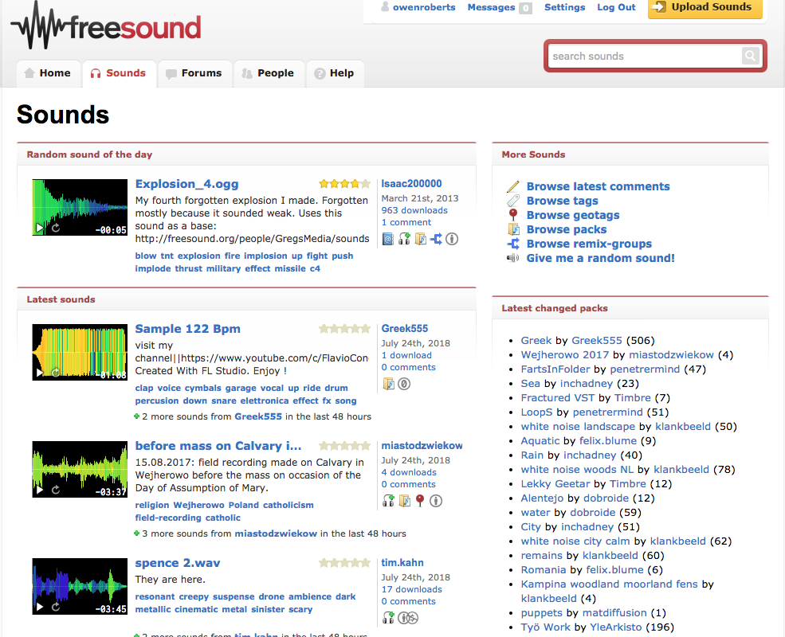
The results page will list Search results with some information about the sound file and preview player. The sound can be played to preview here but can only be downloaded from the sound page.
The search results show the duration of the sound file, the user who uploaded the file, the name, rating, number of downloads and date of upload.

Next to the search results, there are filters to find specific attributes within the results.
The first is the license.
Here are all Creative Commons licenses, with the number of results using each.
Next are tags.
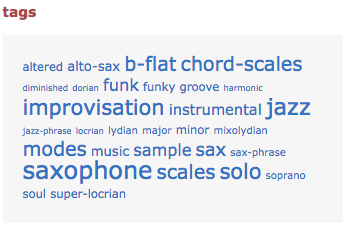
Then file type.
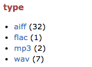
Depending on what kind of sound you search for you may get very different results here. Because it is a site for sound hobbyists, you often see results with better quality sound formats such as AIFF, WAV, and FLAC.
It even filters by file parameters such as sample rate.
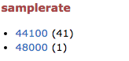
The higher sample rate the higher quality sound, and also possibly larger file size.
Bit depth works the same way, a higher number means higher quality and larger file size. There is also bit rate, which wasn't covered in the intro lesson on sound and is more complex to explain but has the same relationship, higher bit rate, higher quality, higher file size.
Channels refer to one or two channels. Most sounds are recorded in stereo, meaning two channels representing the left and right ear for recreating natural human hearing. Many sound files are mixed to be mono or single channel to significantly reduce file size. A mono sound has both channels repeated in the left and right output.
Once you choose a file to use, click on the file name to go to the file page where more information is available.
This page has a download button to save the file, comments from users and a link to the specific license used by the file.
Keep links to all of the files used for their projects, regardless of the license. In the comments at the top of the sketch add the link to the original sound source.
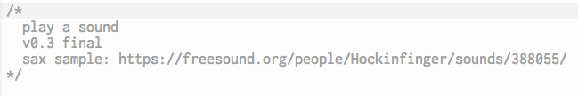
After clicking on the Download button, the file should be downloaded to the Downloads folder on their computer, depending on what operating system they are using. Locate the file and go through the steps to upload it to a p5 sketch. Files downloaded from Freesound.org tend to have long names, it is recommended to rename the files something shorter before uploading.
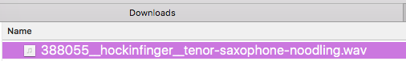
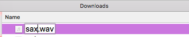
Duplicate the previous lesson p5 sketch and upload the sound file by following these steps:.
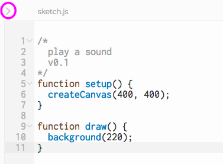

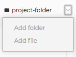
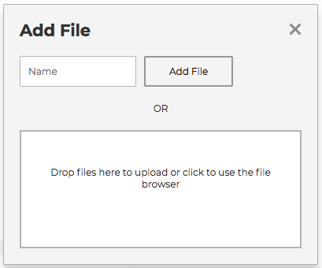
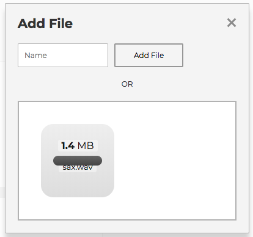
The file will now be in the main project folder and can be referenced from the sketch.

After adding sounds, you simply have to edit the existing code and change the argument in loadSound to play the new sound.
Exercise #1: Add Sounds To A Sketch
Find three sounds to download and add to a p5 sketch. Think of three sounds that you relate to. This could be sounds that make you think of activities, mood, favorite instruments, or anything else.
Now search for them in Freesound.org. Sounds should be 10 seconds long at the most. You might not find the exact same sound, so you will need to be flexible and adapt to the search results.
For each sound, include a link to the original sound source in the comments.
Use this sample code to get you started. Read the comments to get a better understanding. In the next lesson, we'll go over these new functions.
Extensions
mousePressed() and boolean logic to play the sound or add a button to trigger the sound.